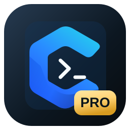

连接 · 模型 · 设置
Windows⇄Android
登录后自动同步
本机运行中的会话独立保留

CShell把终端、远程连接与智能体放在同一个工作台。
登录 Pro 账号，让连接、模型与个人设置随你同行。
登录后自动同步
本机运行中的会话独立保留
Pro 与开源版可独立安装。
Pro 测试版 · 64 位安装程序
下载 Windows 版 ↓Windows 10 / 11 · 0.8.1Pro 测试版 · 签名 APK
下载 Android 版 ↓直接安装 APK · 0.8.1其他平台与 cagent 安装包，请查看 GitHub 中已发布的版本。
查看发行版本 ↗MIT 开源许可证使用邮箱注册账号，登录后自动同步连接、模型与设置。
连接凭据和模型密钥随配置加密同步，设备权限保持独立。
Pro 沿用 CShell 核心，提供账号与云同步扩展。会员付费服务尚未开放。